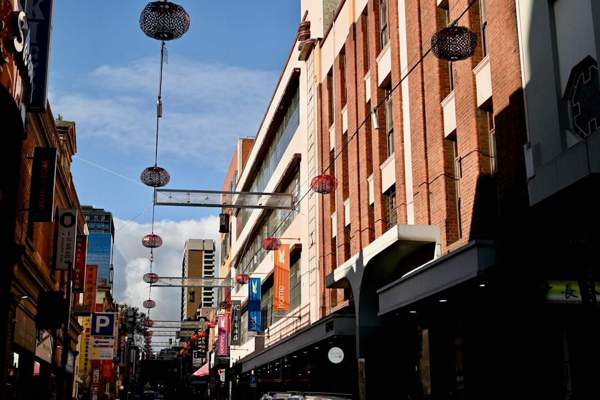

A Melbourne bathroom project usually turns on scope before style. The published guide puts a full renovation at about $8,000 to $35,000, with Australian average spend around $26,000. Bigger costs are tied to layout changes, waterproofing, licensed plumbing or electrical work, labour, and higher grade fixtures. For apartments, compact rooms and older homes, the useful first step is documenting access, approvals, layout frustrations and finish expectations before asking for a quote.
For homeowners comparing bathroom renovations melbourne options, the practical question is how the room, building type, access and compliance work together before fixture choices start driving the conversation.
Bathroom Renovations Melbourne Explained
Melbourne Bathroom Renovations frames the first conversation around the room and the building, not just tiles and tapware. That is useful because a bathroom can look small while hiding major scope in waterproofing, plumbing, electrical work, access, strata conditions or a layout that no longer works.
The published range, about $8,000 to $35,000 for a full renovation, is broad because the jobs are genuinely different. A lower scope makeover is not the same as demolition, new waterproofing, tiling, fit-off and changed services. Premium tiles, stone benchtops and high-end tapware can also push a custom design beyond the top of that range.
- Ask first: is this a cosmetic update, a complete rebuild, a leaking wet-area repair, or a layout correction?
- Record the room: note storage problems, ventilation, access, clearance and the fixtures that must move.
- Separate choice from necessity: waterproofing and licensed trade scope should be understood before finish upgrades are priced.
Who this applies to
This guide fits Melbourne homeowners who are close to requesting quotes but still need sharper project language. It is relevant for family homes, apartments, terraces, compact bathrooms, ensuites and premium full-bathroom rebuilds, because each type can alter the way a contractor inspects and prices the work.
An apartment owner should be ready to describe access and any owners-corporation friction. A terrace or narrow floor plan needs close attention to clearance and space efficiency. A family ensuite may need better storage, ventilation and layout flow. A premium rebuild has a different finish conversation, but it still depends on the same base questions about waterproofing, services and written scope.
For another concise planning reference on bathroom renovations melbourne, see this Melbourne bathroom renovation planning note.
The quote inputs to prepare
The most useful enquiry is not a long design brief. It is a clear bundle of facts a renovator can use to decide the next practical step. The source page asks for suburb, bathroom type, rough scope, what is frustrating now, whether the layout changes, and any apartment or access complication.
Those details reduce guesswork. They help separate a full bathroom renovation from an ensuite upgrade, small-room redesign, waterproofing and tiling job, accessibility change, or linked laundry and powder-room work. The aim is a written scope with assumptions and exclusions visible before work starts.
- State the bathroom type and current problem.
- Say whether fixtures are staying in place or moving.
- List access, apartment, strata or parking complications if known.
- Describe the finish level without treating finishes as the whole job.
Compliance and layout before style
The source page repeatedly puts wet-area compliance first. In practice, that means waterproofing, plumbing and electrical work sit ahead of the nicer finish decisions. A bathroom that photographs well can still fail as a renovation plan if the quote has not dealt with the building, drainage, power, ventilation, access and fit-off assumptions.
Layout efficiency deserves the same early treatment. Compact bathrooms in apartments and terraces may depend on clearances, storage and door swings more than decorative choices. Larger family homes may have room for a more comfortable layout, but moving services can change the quote profile. Design and practicality need to be priced together.
Use finish selections to test the scope rather than blur it. If stone, premium tapware or feature tiles are important, ask whether the allowance, installation assumptions and exclusions are written into the quote.
How to read the cost range
The $8,000 to $35,000 range is best read as a scope signal, not a promise. The lower end suits simpler work and budget makeovers. More extensive remodels move higher when demolition, waterproofing, tiling, plumbing, electrical work, custom design, labour and premium fittings all sit inside the job.
The quoted Australian average of around $26,000 is also a midpoint, not a substitute for inspection. Melbourne projects may push higher where labour, trades availability and compliance requirements affect the final quote. That is why the first quote conversation should expose assumptions rather than chase one headline number.
- For a budget check: ask what is excluded, what is provisional and what finish level has been assumed.
- For a full rebuild: ask how demolition, waterproofing, tiling and fit-off are staged in the written scope.
- For an apartment: ask how access and approval constraints affect sequencing and cost.
What to ask before committing
Before accepting a quote, ask for the renovation scope, exclusions and quote assumptions in writing. That point appears directly in the source page, and it is the simplest way to compare two proposals without confusing finish preferences with trade scope.
Ask how the contractor has treated waterproofing, plumbing, electrical work, ventilation, storage and access. If the bathroom is small, ask how clearances are protected. If it is an apartment, ask what information is needed for any approval conversation. If it is a premium rebuild, ask which finish selections are included and which are allowance items.
The best brief is short, specific and honest about unknowns. A contractor can then quote the real room, not an imagined version of it.
- Define the room. Write down the bathroom type, suburb, current frustration and whether the layout is changing.
- Flag building constraints. List apartment, strata, access or parking issues before asking for a quote.
- Separate scope from finishes. Clarify waterproofing, plumbing, electrical work and exclusions before choosing premium items.
- Request written assumptions. Ask the quoting contractor to document scope, exclusions and allowances before you commit.
| Situation | Main issue to clarify | Quote question |
|---|---|---|
| Compact ensuite | Storage, ventilation, clearance and layout efficiency | Which layout changes are essential before finishes are selected? |
| Apartment bathroom | Access and owners-corporation friction | What approval or access information is needed before a fixed scope? |
| Full rebuild | Demolition, waterproofing, tiling and fit-off | Are exclusions and assumptions written into the quote? |
| Premium renovation | Fixture, tile, stone and tapware level | Which selections are included and which are allowances? |
Common questions
How much should I allow for a full bathroom renovation in Melbourne? The source page gives a typical range of about $8,000 to $35,000. Custom designs with premium tiles, stone benchtops and high-end tapware can exceed $35,000.
Why can two quotes for the same room look very different? They may include different assumptions about demolition, waterproofing, plumbing, electrical work, tiling, access and finish quality. Ask for exclusions and quote assumptions in writing.
What details should I prepare before requesting a quote? Prepare the suburb, bathroom type, rough scope, current frustrations, whether the layout changes, and any apartment or access complication.
Is a small bathroom automatically cheaper? Not always. A compact bathroom can still involve tight clearances, storage problems, waterproofing, tiling and service work, so the scope matters more than floor area alone.
This guide covers Melbourne bathroom renovation planning, quote inputs, cost signals, wet-area scope and room-type decisions.